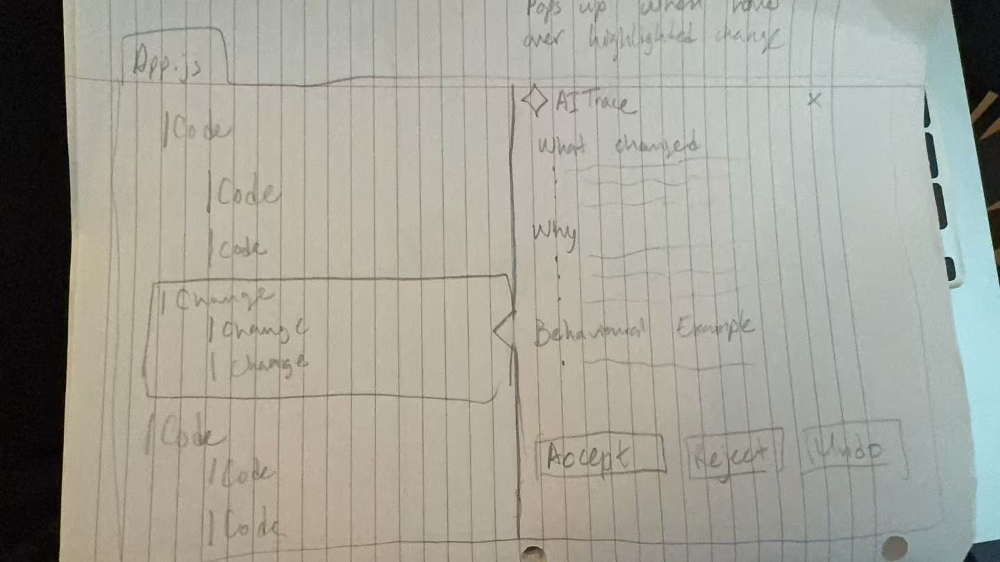
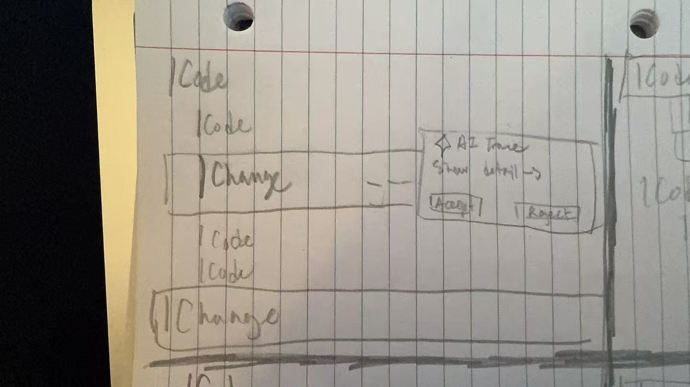
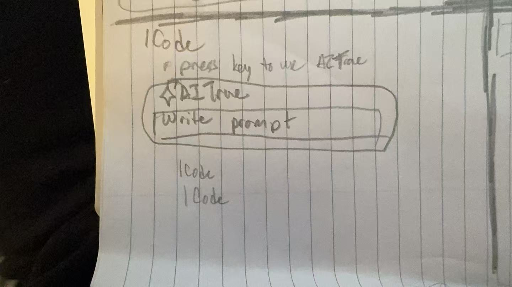
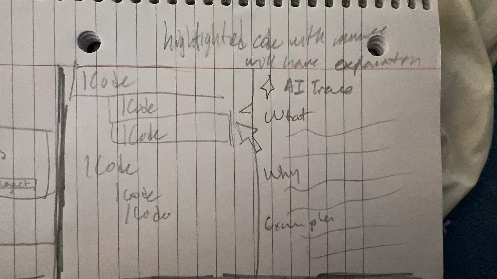
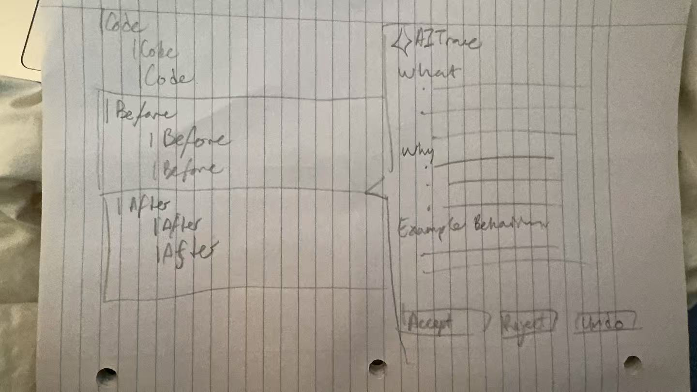
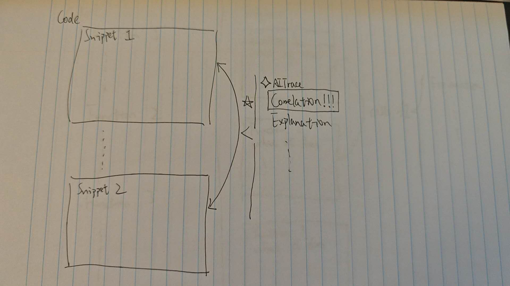
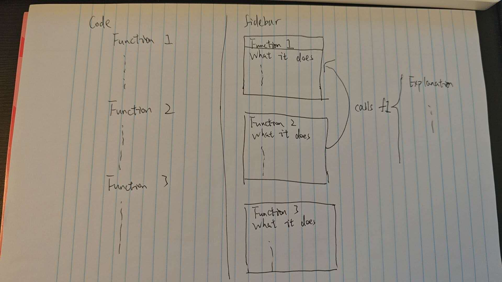
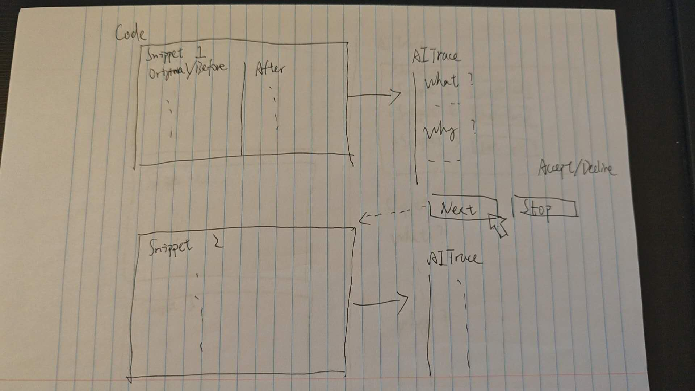
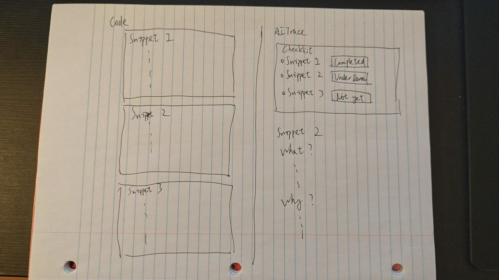
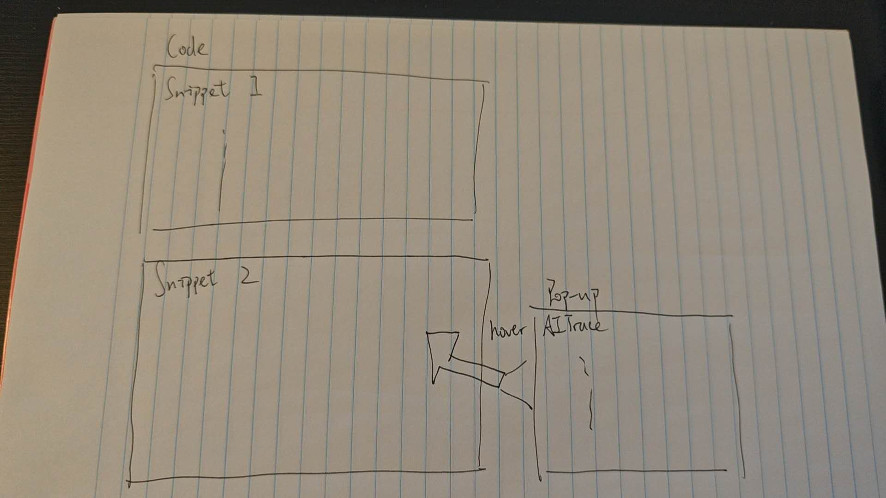

Low Fidelity Prototype
Low Fidelity Sketches
We created 10 low-fidelity sketches to explore different ways people could interact with AITrace. These sketches helped us picture how someone would use each feature and whether it could help them understand the code.
After looking at the strengths and weaknesses of each design, we picked the most promising ideas and used the 10 plus 10 method to develop them further.
The 10 sketches below each show a different design idea.










Low Fidelity Prototypes
After creating our first low-fidelity sketches, we wanted to explore three key features:
- Show code changes clearly and efficiently.
- Make interacting with AITrace quick and intuitive.
- Keep track of all code changes and move between them quickly.
At this stage, we designed two low-fidelity prototypes to explore how these features could work. Each interface shows the full flow of interacting with AITrace.
This prototype highlights changes in the relevant parts of the code. A floating button opens a floating window with a detailed explanation of the changes.
This prototype replaces the original code directly with the code generated by the LLM. A sidebar gives an organized overview of the changes. The checklist lets users jump to a specific change and read its explanation.
Usability Goals
The table below summarizes AITrace's usability objectives, their measurement, and the rationale behind them. These goals will guide our evaluation of the two low-fidelity prototypes during user testing.
| Goal | Measurement | Rationale |
|---|---|---|
|
Code Understanding Users should be able to explain the modified code and itseffects in their own words. |
Score participants' explanations on a 0–2 scale: 0 = incorrect or no explanation; 1 = identifies what changed but cannot explain its effect; 2 = correctly explains the change and its intended effect/functionality.; | Evaluates whether AITrace helps users understand the modified code rather than simply read an explanation or accept AI generated suggestions without understanding them. |
|
Change Visibility Users must be able to identify which parts of the code are changed by an AI suggestion and recognize related edits. |
Measure whether users correctly identify changed lines, review units, and related edits. | Students need to see what has changed before deciding whether to accept it. Clear visibility helps prevent users from missing related edits or unintended effects. |
|
Task Success and Learnability New users must be able to complete key review tasks, including viewing changes, opening explanations, accepting or rejecting changes with minimal guidance. |
Measure the percentage of tasks completed, completion time, number of errors, and prompts required. | Ensures students can review AI generated code without struggling with the interface. Good learnability helps users review AI suggestions instead of automatically accepting all generated code. |
|
Manageability Users should not feel overwhelmed by the amount of code, explanation, or review controls. |
Measure post-task effort using a 0–5 scale (0 = no effort, 5 = extreme effort) and observe hesitation, confusion, or skipped explanations. | Large AI responses were a major problem identified in the observations. AITrace should make review manageable while still providing access to useful detail. |
|
Efficiency of Review Users must locate, inspect, and decide on code changes quickly and without unnecessary repeated actions. |
Measure task time, navigation errors, and repeated or redundant interactions. | Minimizes the effort needed to relate AI explanations to code, allowing users to focus on understanding the change instead of searching through the interface. |
|
User Satisfaction and Perceived Utility Users should find the explanations, review controls, and navigation features useful and relevant to understanding AI generated changes. |
Measure post-test ratings of usefulness and satisfaction on a 0-5 scale, along with qualitative feedback. | Ensures the design elements contribute to helping students understand and evaluate AI code without introducing unnecessary features. Positive user experiences may also encourage future use of AITrace. |
Benchmarks
The following benchmark tasks evaluate AITrace against our usability goals. They cover finding AI-generated changes, understanding their effects, navigating between explanations, and making review decisions. Task instructions describe what to accomplish without telling participants which interface controls to use.
| Benchmark Task | Usability Goal(s) | What Participants Do | What to Measure |
|---|---|---|---|
| Identify Code Changes | Change Visibility | Examine an AI modification and identify which code was added, removed, or changed, including related edits where present. | Identification accuracy, completion rate, time, missed changes, and errors. |
| Locate and Read an Explanation | Task Success and Learnability, Efficiency of Review | Starting from the modified code, find and open the explanation associated with a particular change. | Completion rate, time, incorrect selections, unnecessary interactions, and prompts required. |
| Understand a Code Change | Code Understanding | Review the explanation and describe the modification and its intended effect in their own words. | Comprehension score (0–2), explanation accuracy, and misunderstandings. |
| Accept or Reject a Suggestion | Code Understanding, Task Success, Learnability; Efficiency of Review | Decide whether a suggested change meets the stated task requirement/user's prompt (e.g., improving code quality, fixing a bug), accept or reject it, and explain the decision. | Decision accuracy, comprehension score (0–2), successful use of the intended control, time, errors, and prompts required. |
| Evaluate the Review Experience | Manageability, User Satisfaction, Perceived Utility | After completing the review tasks, rate the effort required, the usefulness of the features, and overall satisfaction. Describe what helped or hindered understanding. | Effort rating (0–5), usefulness and satisfaction ratings (0–5), observed confusion, skipped explanations, and qualitative feedback. |
Materials
Consent Form
Observer Briefing
Stay neutral and quietly watch how participants use the two prototypes to find code changes, understand explanations, and move between changes. Pay attention to whether they can connect each explanation to the right code and describe what the change does in their own words.
For Prototype 1, watch how they use the highlights and floating explanation window. For Prototype 2, watch how they use the sidebar and checklist to keep track of changes.
Note pauses, repeated actions, and signs of confusion or frustration. Record task time, and record any usability challenges the participant encounters. The goal is to find what feels clear, what gets in the way, and what we can improve.
User Introduction
Thank you for taking part in our testing session. AITrace is designed to help students understand code changes made by AI assistants. Today, you will try two early designs and work through a few short tasks, such as finding a code change, reading its explanation, and moving between changes. We want to learn which parts feel clear and which could be easier to use.
Please think aloud: tell us what you are looking for, what you expect to happen, and what feels confusing. These are early prototypes, so some actions may need to be shown by the moderator. We are testing the designs, not your coding skills. If you get stuck, just tell us, that is useful feedback too. You can ask questions, skip a task, take a break, or stop at any time.
User Training Documentation
AITrace is a plugin for IDEs such as VS Code. It helps you quickly find changed code and understand what has changed. You can open AITrace after an LLM has made changes to your code.
Prototype 1:
Changed code is highlighted, and an AITrace icon appears. Click the icon to open a floating window showing information about the changes.
Prototype 2:
Switch to the AITrace view in the IDE sidebar to open the plugin. Code changes are added to a checklist, where you can select an item to jump to that change and read its explanation.
Both prototypes show what has changed and explain why each change was made.